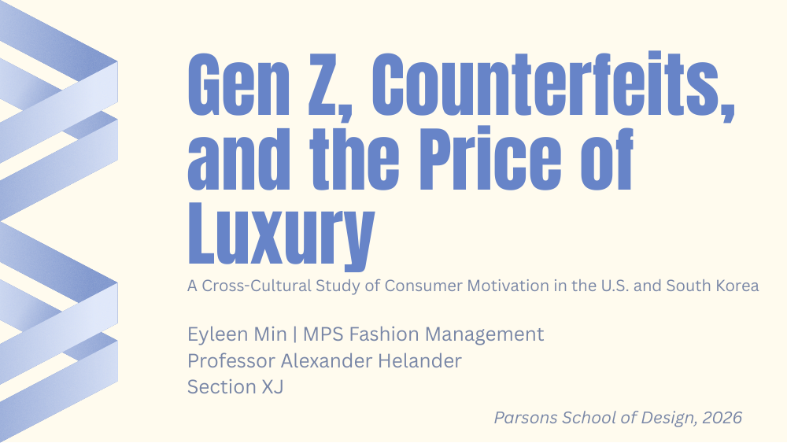

Graduate Capstone
Gen Z, Counterfeits, and the Price of Luxury: a cross-cultural study of consumer motivation in the United States and South Korea.

Research
A mixed-methods study drawing on 70 Gen Z survey responses and analysis of TikTok videos and Reddit conversations.
Focus
How price, identity, and cultural expectations shape counterfeit luxury consumption in the U.S. and South Korea.